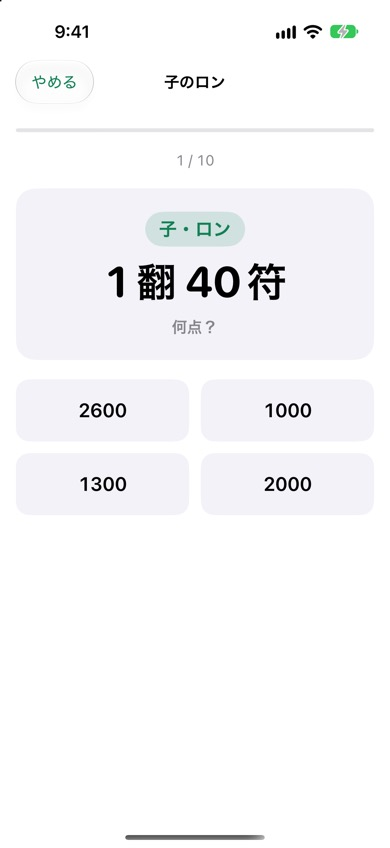
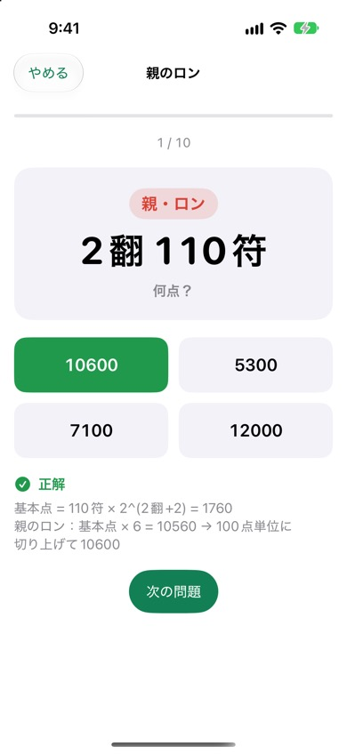

麻雀点数計算ドリル
麻雀の点数計算を、練習問題で覚えるiPhoneアプリです。「子・ロン 3翻40符」のような問題に4択で答え、間違えたら計算の手順をその場で確認できます。
iPhone（iOS 17以降）・無料（広告あり）


できること
- 4択の練習問題：1セット10問。子のロン、親のロン、ツモ（子・親）、満貫以上もまぜたミックスから選べます。
- 計算の手順を解説：「基本点＝符×2^(翻+2)」→「子のロンは×4」→「100点単位に切り上げ」まで、毎問表示します。
- 苦手を復習：間違えた問題がたまり、正解すると外れます。
- 点数早見表：子・親それぞれ、20符〜110符×1〜4翻のロンとツモの点数、満貫以上の点数を一覧できます。
- 成績の記録：モードごとの正解率と、全問正解した最短タイムを記録します。
こんな方に
- 点数計算を他の人に任せている、これから覚えたい方
- 符計算はできるが、点数表がまだ頭に入っていない方
- 健康麻雀・セット麻雀で点数申告をすらすら言いたい方
よくある質問
本場や供託は含まれますか
含みません。和了点（翻と符から決まる点数）だけを出題します。
切り上げ満貫には対応していますか
対応していません。30符4翻・60符3翻は7700点（親は11600点）として出題します。
広告を消せますか
「設定」→「広告を削除する」から、買い切り（300円）で広告をすべて非表示にできます。機種変更後は「購入を復元」を押してください。
便利な早見表
麻雀 点数早見表：符と翻から、子・親のロン・ツモの点数を一覧で
麻雀 点数計算の覚え方：覚える順番とコツ、4択のミニテスト
お問い合わせ
メール: tanacount.support@gmail.com
返信までお時間をいただく場合があります。
ほかのアプリ
麻雀何切る問題：何切る問題を自動で出題。打牌ごとの受け入れ枚数で解説、今日の5問つき
麻雀待ち判定：手牌から待ち牌・役・符・点数がわかる。打牌候補と役一覧つき
麻雀成績表：セット麻雀の精算・通算成績・局ごとのグラフ、iCloudで同卓者と共有
麻雀点数計算：符と翻から点数を自動計算する、卓に置いて使う麻雀の点数表示アプリ
棚卸カウンター：JANバーコードを読み取って、小さなお店の在庫を数えるiPhoneアプリ